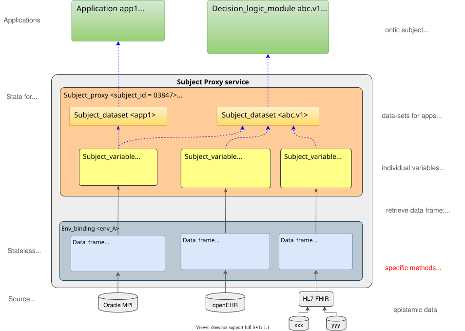
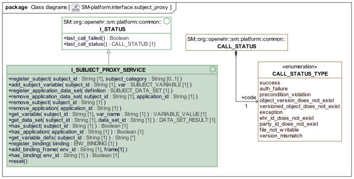
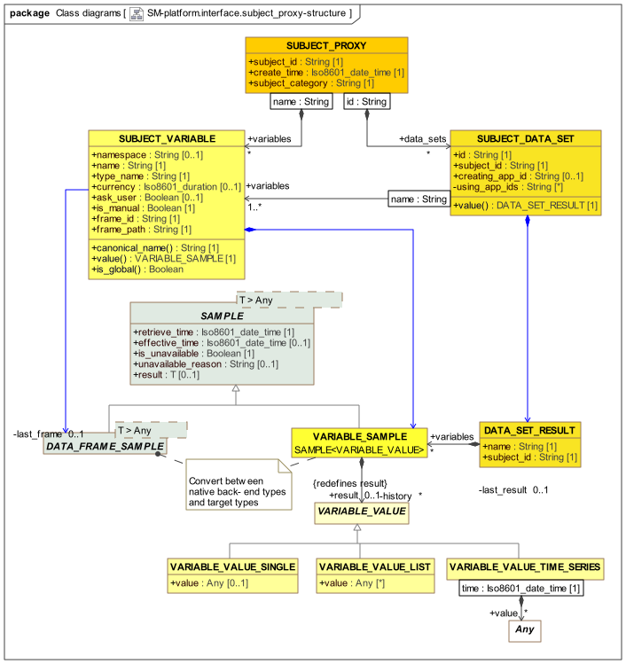
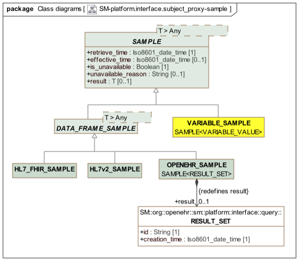
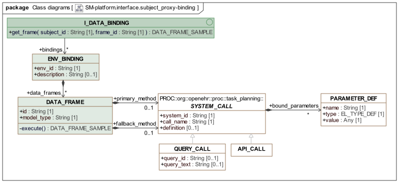
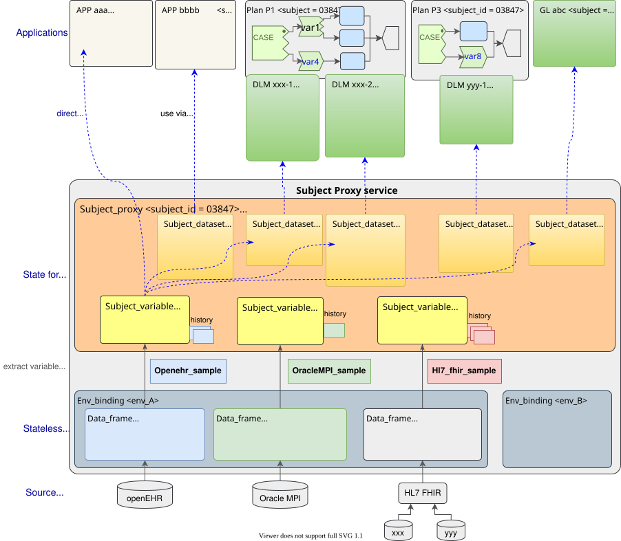

Subject Proxy Service (SPS)
Overview
The Subject Proxy Service (SPS) allows symbolic variables characterising the real world state of a subject which is often a subject of care (i.e a patient) but may be some other entity, to be retrieved and tracked over time. Such variables are useful for many kinds of application, since they provide a standard means of obtaining information that concretely reside in different kinds of back-end systems or devices, or may be requested from live users. The SPS avoids the calling application having to know about the particular standard, representational model, query language or API of the data source for any given variable. Consequently there is no need to even assume that an openEHR back-end system is the source of any given variable.
The following diagram shows conceptually the population of subject proxy variables from back-end systems, via the various intermediate layers of the Subject Proxy Service.

Subject variables may be conveniently used by any application and are relied upon by openEHR Task Plans and Decision Logic Modules, for which the conceptual purpose and typical use are described in the openEHR Process and Planning Overview.
Subject Variable Naming
The Subject Proxy Service enables the registration of subject variables by various means. Each subject variable is identified within the service by a canonical name (SUBJECT_VARIABLE.canonical_name, in the model below), which is the name used for it in calls mentioning variables by name.
The canonical name is formed from SUBJECT_VARIABLE.name, prefixed by namespace if it is set, and are unique within the service, regardless of which subjects or applications may use them at any given time. The name attribute is an intelligible natural language names that accurately indicate its meaning, such as "date_of_birth", "is_type1_diabetic" and so on, but may be any name that is legal within the relevant source contexts and valid within this service. Some variable names such as "date_of_birth" are regarded as having a globally agreed definition (e.g. the date recorded as date of birth against the subject in administration systems), while other variables such as has_heart_failure may have a definitions specific to particular guidelines, such as CHA2DS2-VASc, a guideline for atrial fibrillation (AF) diagnosis etc. The use of namespaces in the latter cases would have the effect of defining variables such as cha2ds2vasc::has_heart_failure and af_diagnosis::has_heart_failure (where "cha2ds2vasc" and "af_diagnosis" are namespace values), each of which may have a semantically different retrieval definition (for example including or excluding heart murmur).
If namespace is not set, the variable is understood to be in the 'global' namespace, and to have the same meaning for all users. There is nothing to stop a variable existing in both the global namespace and one or more specific namespaces, for example date_of_birth (standard administrative concept) and tribal::date_of_birth (a specific 'date of birth' concept used for ethnic or religious reasons).
To be valid within the service, canonical names may not contain whitespace or any unprintable character, but there are no other restrictions (e.g. of case, or first character being a letter etc).
An application data set, which is a convenience collection of variables registered by / for an application may however use data set-local aliases, for example "dob" for the canonical name "date_of_birth". This allows the names used locally within client computation contexts for the same variable registered in the SPS may differ. It is recommended that this flexibility be used sparingly in order to limit confusion within the overall system design environment.
Service Interface
The SPS supports the following abstract kinds of operations (with variants):
-
Register a subject: create a new subject in the service, with which which variables can be associated;
-
Add subject variable: add a subject variable definition to an existing subject;
-
Register application data set: register a set of subject variables for a particular application;
-
Register binding: add a binding for an 'environment', which is usually a concrete computing context containing multiple back-end systems from which subject variables can be populated;
-
Add binding data frame: add a data retrieval frame to an environment binding - this provides a data access method for that environment.
The platform.interface.subject_proxy package shown below defines the service interface and related information structures for the SUBJECT_PROXY service in the openEHR platform architecture.

sm.platform.interface.subject_proxy packageData Structures
The data entities used by the SPS are conceptually as follows:
-
Subject proxy: a container for all variables and data sets for a single subject;
-
Subject variable: a proxy for a single subject variable, including sample history over time;
-
Subject data set: a proxy for a particular set of variables in use by some application;
-
Sample: a sample represents a time-stamped result of a request to obtain a value via its binding, and either contains a value, or an 'unavailable' flag and reason;
-
Variable value: a variable value is the value of some variable as it was at a moment in time, and may take various forms.
The formal class definitions are shown in the following UML.

Samples
The SAMPLE class provides a generic wrapper for any retrieved back-end data, stamping it with a retrieve_time and a is_unavailable flag in case no data could be obtained. The optional effective_time represents the clinically relevant time of the sample, which is comparable to currency in order to determine the freshness of the data. The descendant DATA_FRAME_SAMPLE specialises the payload to full data frame results, which may be large query results, complex data objects etc, or indeed, single values.
The following UML shows the Sample hierarchy.

Bindings
A binding (represented by ENV_BINDING) is understood as a set of retrieval methods (e.g. API invocations, queries) each defined by a data frame (represented by DATA_FRAME), for a particular execution environment, and independent of any particular subject. A binding may be loaded in the service via the call register_binding(). Each data frame has a primary and optionally a fallback method which can be executed to obtain the data, as well as a retrieval result, in the native format of the API used to access the source system, e.g. openEHR AQL Result_set, a particular FHIR profiled resource, an HL7v2 message, XDS document and so on. The interface I_DATA_BINDING provides a (partially specified) internal API for retrieving a result from a particular data frame.
The retrieved data frame results are of type DATA_FRAME_SAMPLE, representing a single 'sample' of some kind of retrieval result from a back-end system or interoperability gateway. The descendant types provide a few common forms.
The following UML diagram shows the classes and an internal interface relating to bindings.

Persistence
It is assumed that the configuration contents (i.e. not data frame or variable results) of the SPS are persisted for the life of the system i.e. until the point of any system level re-initialisation actions. The SPS includes a reset() operation that enables all content to be dumped, returning the service to its virgin state.
Usage
The usage of the service follows the general pattern:
-
at system startup, register a binding for an environment, consisting of concrete methods for retrieving and converting data from back-end systems to its variable form;
-
during normal operation, register a subject, typically a patient, but may be any other tracked entity, including devices, sites;
-
add variable definitions to a subject.
The calling sequence to achieve this is of the logical form:
//
// populated in caller
//
sps: I_SUBJECT_PROXY_SERVICE;
var1, var2, var3: SUBJECT_VARIABLE;
env_binding1: ENV_BINDING;
//
// calls to Subject Proxy Service
//
sps.register_binding (env_binding1);
sps.register_subject ("1394850", "individual");
sps.add_subject_variable ("1394850", var1);
sps.add_subject_variable ("1394850", var2);
sps.add_subject_variable ("1394850", var3);The first call registers a binding for a specific environment. See below for how bindings are defined. The next call creates the subject in the service, while the subsequent add_subject_variable calls are used to build up the proxy variable set for the subject.
This calling sequence suits system initialisation when specific subject proxy variables are created for global use for specific subjects. Typical variables in a healthcare IT environment include date_of_birth and sex.
However many variables are defined by particular applications, including guidelines and planning applications. Accordingly, the service provides a way to register an application data set, i.e. a collection of subject variables, for a subject. In this case, the calling sequence will be of the following form.
//
// populated in caller
//
sps: I_SUBJECT_PROXY_SERVICE;
ds1, ds2: SUBJECT_APP_DATA_SET;
env_binding1: ENV_BINDING;
//
// calls to Subject Proxy Service
//
sps.register_binding (env_binding1);
sps.register_subject ("1394850", "individual");
sps.register_application_data_set (ds1);
sps.register_application_data_set (ds2);In this sequence, the subject variables are established via calls to register_application_data_set, each of which will cause the addition or modification of subject variables not already defined for the subject. When use of an application or subject ceases, the relevant data sets can be removed easily via the various remove_xx calls.
The following example illustrates a typical run-time situation for the use of the Subject Proxy Service.

Specifying a Data-set
A data set specification would be provided through a REST API as a text specification, e.g. in JSON or YAML. Such a specification might be derived from an openEHR Decision Language Modules, or some other source. An example is shown below.
data_set: !!SUBJECT_DATA_SET
name: antenatal_1.v1.0.3
creating_app_id: task_planning
variables:
- name: date_of_birth
type_name: Date
- name: systolic_bp
type_name: Quantity
currency: PT2m
- name: diastolic_bp
type_name: Quantity
currency: PT2m
- name: is_type1_diabetic
type_name: BooleanSpecifying a Binding
The following shows a partial YAML representation of an ENV_BINDING for a particular deployment environment.
binding: !!ENV_BINDING
data_frames:
- frame_id: OracleMPI::basic_demographics
model_type: OracleMPI
primary_method: !!API_CALL
system_id: pas3.nhs.org.uk
call_name: REST_get
parameters:
- xxxx: abc
- yyyy: def
- frame_id: openEHR::vital_signs
model_type: openEHR-EHR
primary_method: !!QUERY_CALL
system_id: ehr1.nhs.org.uk
call_name: aql_query
query_text: xxxx
- frame_id: OracleMPI::basic_demographics
model_type: HL7-FHIR_DSTU4_UK
primary_method: !!API_CALL
system_id: ehr1.nhs.org.uk
call_name: fhir_get
query_text: xxxxClass Descriptions
Unresolved include directive in modules/openehr_platform/pages/subject_proxy_service.adoc - include::ROOT:partial$classes/i_subject_proxy_service.adoc[]
Unresolved include directive in modules/openehr_platform/pages/subject_proxy_service.adoc - include::ROOT:partial$classes/subject_proxy.adoc[] Unresolved include directive in modules/openehr_platform/pages/subject_proxy_service.adoc - include::ROOT:partial$classes/subject_variable.adoc[]
Unresolved include directive in modules/openehr_platform/pages/subject_proxy_service.adoc - include::ROOT:partial$classes/subject_data_set.adoc[] Unresolved include directive in modules/openehr_platform/pages/subject_proxy_service.adoc - include::ROOT:partial$classes/data_set_result.adoc[]
Unresolved include directive in modules/openehr_platform/pages/subject_proxy_service.adoc - include::ROOT:partial$classes/sample.adoc[] Unresolved include directive in modules/openehr_platform/pages/subject_proxy_service.adoc - include::ROOT:partial$classes/data_frame_sample.adoc[] Unresolved include directive in modules/openehr_platform/pages/subject_proxy_service.adoc - include::ROOT:partial$classes/openehr_sample.adoc[] Unresolved include directive in modules/openehr_platform/pages/subject_proxy_service.adoc - include::ROOT:partial$classes/hl7v2_sample.adoc[] Unresolved include directive in modules/openehr_platform/pages/subject_proxy_service.adoc - include::ROOT:partial$classes/hl7_fhir_sample.adoc[] Unresolved include directive in modules/openehr_platform/pages/subject_proxy_service.adoc - include::ROOT:partial$classes/variable_sample.adoc[]
Unresolved include directive in modules/openehr_platform/pages/subject_proxy_service.adoc - include::ROOT:partial$classes/variable_value.adoc[] Unresolved include directive in modules/openehr_platform/pages/subject_proxy_service.adoc - include::ROOT:partial$classes/variable_value_single.adoc[] Unresolved include directive in modules/openehr_platform/pages/subject_proxy_service.adoc - include::ROOT:partial$classes/variable_value_list.adoc[] Unresolved include directive in modules/openehr_platform/pages/subject_proxy_service.adoc - include::ROOT:partial$classes/variable_value_time_series.adoc[]
Unresolved include directive in modules/openehr_platform/pages/subject_proxy_service.adoc - include::ROOT:partial$classes/i_data_binding.adoc[] Unresolved include directive in modules/openehr_platform/pages/subject_proxy_service.adoc - include::ROOT:partial$classes/env_binding.adoc[] Unresolved include directive in modules/openehr_platform/pages/subject_proxy_service.adoc - include::ROOT:partial$classes/data_frame.adoc[]